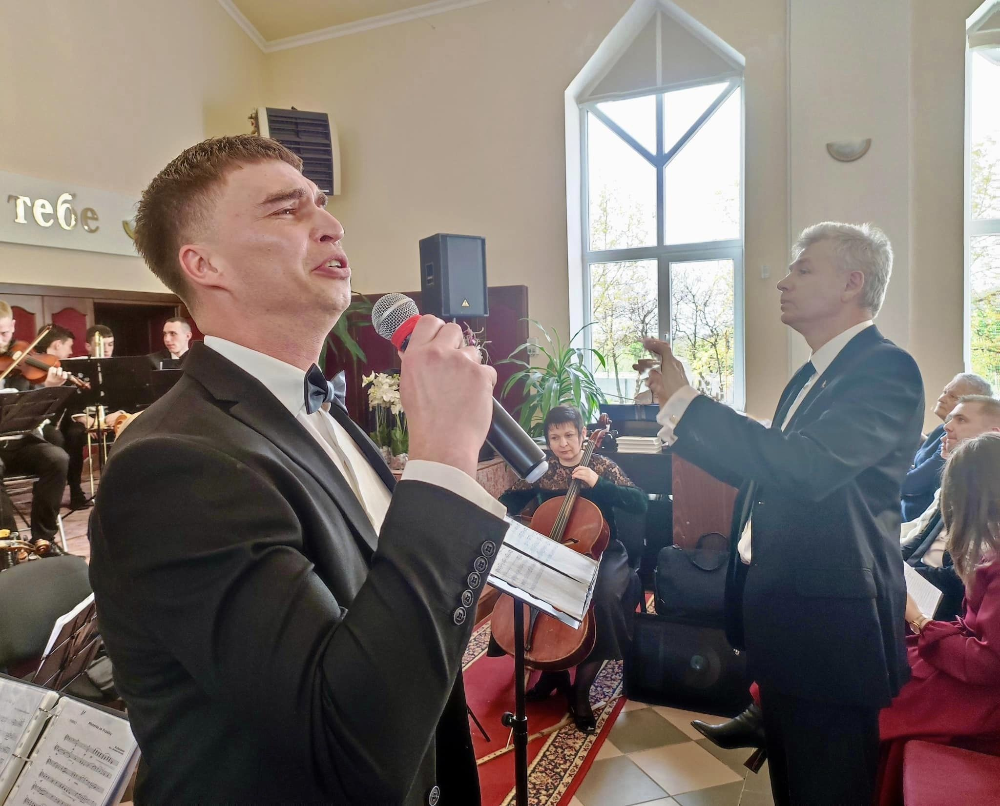

Біографія
Основні моменти творчої біографії Михайла Іващенка
Народився 30 липня 1990 року в військовому містечку Озерне Житомирської області. Ще в початкових класах школи замислювався ким же бути: художником, актором чи співаком? Навчався малювати, грав і імпровізував в шкільних спектаклях, співав у художній самодіяльності. Творчість і сцена стали сенсом його життя.
У музичній школі вчився на фортепіанному відділі. У 2006 році вступив в Житомирське музичне училище ім. В.С. Косенка на диригентсько - хоровий відділ, а через два роки перевівся на вокальний відділ, так як сольний спів став головною справою в його житті. У 2011 році закінчив музичне училище з відзнакою і вступив на естрадний відділ в Житомирський Інститут культури і мистецтв Національної Академії керівних кадрів культури і мистецтв. Закінчив його з відзнакою в 2014 році. Ще в музичній школі його педагог Івасенко Лариса Петрівна, яка стала йому наставником, педагогом по естрадному співу, другою мамою, товаришем, а пізніше і концертним директором, сказала: "Вір в свою мрію! Твій голос гідний великої сцени !" Почалися щоденні репетиції протягом всіх цих років і до сьогоднішнього часу!
Доля дарувала йому перемоги. Ще навчаючись у музичній школі, він став переможцем районних та обласних конкурсів.
- 